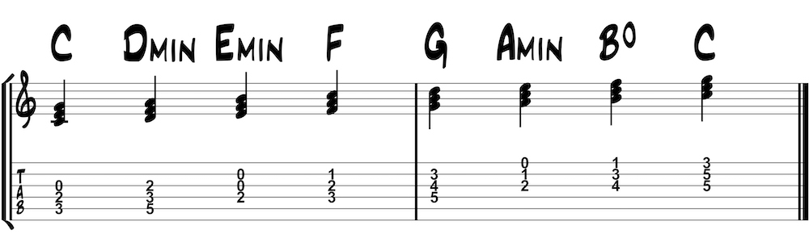
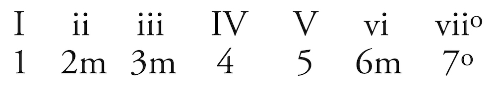
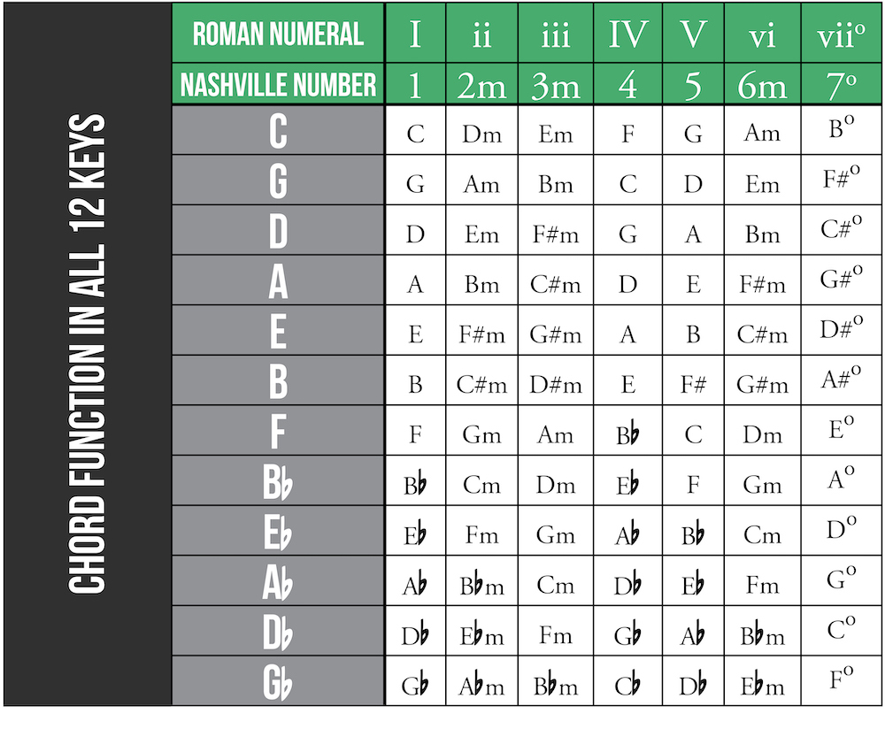

Functional harmony, Roman numerals, Nashville numbers, and common chord progressions
Functional harmony
Functional harmony describes the relationship of each chord to the key center. Stacking thirds from each degree of the major scale creates seven chords within a given key. The key will determine whether each interval is a major or minor third. Analyzing these patterns will tell you whether you have a major, minor, or diminished chord. Let’s look at the key of C major:

Roman numerals & Nashville numbers
There are two common ways to notate chord function. The traditional (i.e. classical) method is to use Roman numerals: uppercase for major and lowercase for minor. Another common method is the Nashville Number System. This system uses Arabic numerals and chord symbols in place of Roman numerals but essentially works in the same way. These systems make it easier to learn songs or teach a chord progression to a fellow musician.


Common chord progressions
Most popular music uses the same chord progressions, or patterns, over and over in different keys. Practicing 1, 4, 5, and 6m chords in common guitar keys will help you advance as a guitarist and learn new songs quickly. Use the chart on the previous page for help finding these chords in some common guitar keys.
Common guitar keys:
CAGED
After learning chord progressions in these common keys, we can transpose them to less common keys with barre chords or even with a capo.
These popular songs use 1, 4, 5, and 6m chords in different orders and combinations. This list is a starting point as these progressions are used in many styles of music. How many of these songs are you familiar with?
1 6m 4 5
- “Stand By Me” -Benny King (A)
- “I Will Always Love You” -Whitney Houston (A) & Dolly Parton (Ab)
- “Hallelujah” -Leonard Cohen & Jeff Buckley (C) (verse: 1 6 1 6 4 5 1 5)
- “Last Kiss” -Pearl Jam (G)
- “Purple Rain” -Prince (Bb) (verse: 1 6 5 4)
- “Total Eclipse Of The Heart” -Bonnie Tyler (chorus) (Ab)
- “No Surprises” -Radiohead (F) (1 6 4 5 4)
- “Happiness Is A Warm Gun” -The Beatles (chorus) (C)
- “Unchained Melody” -Righteous Brothers (C)
- “Earth Angel” -The Penguins (chorus) (Ab)
- “In The Aeroplane Over The Sea” -Neutral Milk Hotel (G)
1 4 5
- “Donna” -Ritchie Valens (F)
- “Mr. Big Stuff” -Jean Knight (Eb)
- “I Love Rock And Roll” -Joan Jett and the Black Hearts (chorus) (E)
- “Here ComesTthe Sun” -The Beatles (verse) (A)
1 5 6m 4
- “Let It Be” -Paul McCartney (C) (1 5 6 4, 1 5 4 1)
- “I’m Yours” -Jason Mraz (B)
- “Hey Soul Sister” -Train (E)
- “Under The Bridge” -Red Hot Chili Peppers (E)
- “When I Come Around” -Green Day (F#)
- “Don’t Stop Believin’” -Journey (E) (1 5 6 4, 1 5 3 4)
- “With Or Without You” -U2 (D)
- “No Woman No Cry” -Bob Marley (C#) (chorus: 1 5 6 4, 1 4 1 5)
- “Taylor” -Jack Johnson (C)
- “Take on Me” -A-Ha (C)
- “What’s My Age Again?” -Blink-182 (chorus) (Gb/F#)
- “Someone Like You” -Adele (Chorus) (A)
- “Glycerine” -Bush (F) (Verse)
- “Man In The Mirror” -Michael Jackson (G) (verse: 1 5/7 6 4)
6m 4 1 5
- “One Of Us” -Joan Osborne (verse/chorus) (A)
- “Complicated” -Avril Lavigne (chorus) (F)
- “Poker Face” -Lady Gaga (B)
- “Africa” -Toto (Chorus) (A)
- “Bullet With Butterfly Wings” -The Smashing Pumpkins (chorus) (Db)
- “Holiday” -Green Day (G)
- “It’s My Life” -Bon Jovi (chorus) (Eb)
6m 5 4 5
- “All Along The Watchtower” -Bob Dylan (E) Jimi Hendrix (Eb)
- “Rolling In The Deep” -Adele (chorus) (Eb)
- “My Heart Will Go On” -Celine Dion (E)
- “Sultans Of Swing” -Dire Straits (instrumental) (F)
- “Somebody That I Used to Know” -Gotye (chorus) (F)
- “Smooth Criminal” -Michael Jackson (chorus) (C)
1 4 1 5
- “Brown-Eyed Girl” -Van Morrison (verse) (G)
- “The Lion Sleeps Tonight” -The Tokens/Lion King (F)
- “Why Don’t You Get A Job” -The Offspring (F)
- “Another Saturday Night” -Sam Cooke (A)
1 4 5 4
- “Wild Thing” -The Trogs (A)
- “Louie Louie” -The Kingsmen (Ab)
- “The Joker” -Steve Miller Band (F)
- “Walking On Sunshine” -Katrina And The Waves (Bb)
- “Hang On Sloopy” -The McCoys (G)
- “Summer Nights” -Grease (D)
- “La Bamba” -Ritchie Valens (C)
- “Dancing With Myself” -Generation X/Billy Idol (E)
Back: Building triads
Next: Garner Guitar Beginning to Intermediate Guitar Course 3: Blues, CAGED & Pentatonics